knitr::include_graphics('lec_figs/bias-variance-tradeoff-1.png')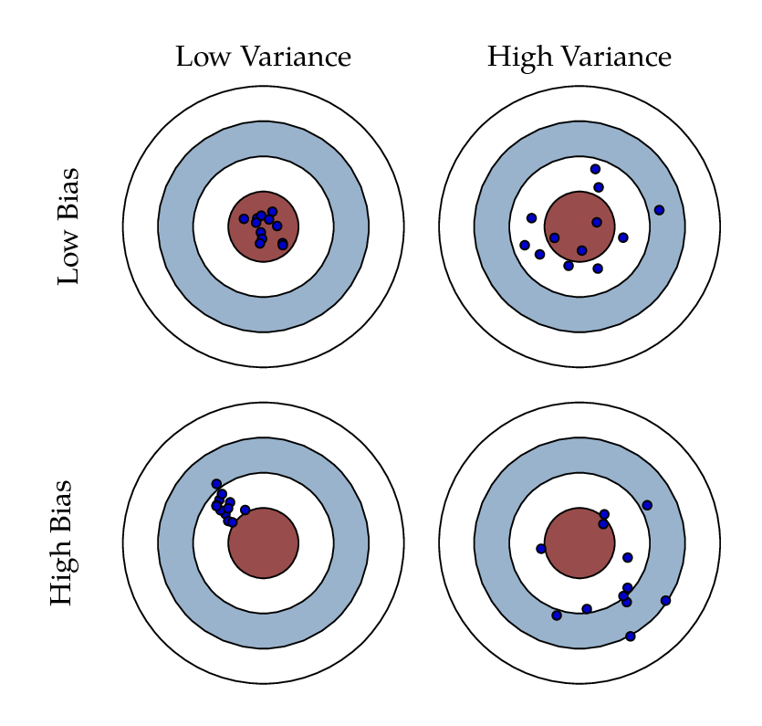
Machine Learning Lab
knitr::include_graphics('lec_figs/bias-variance-tradeoff-1.png')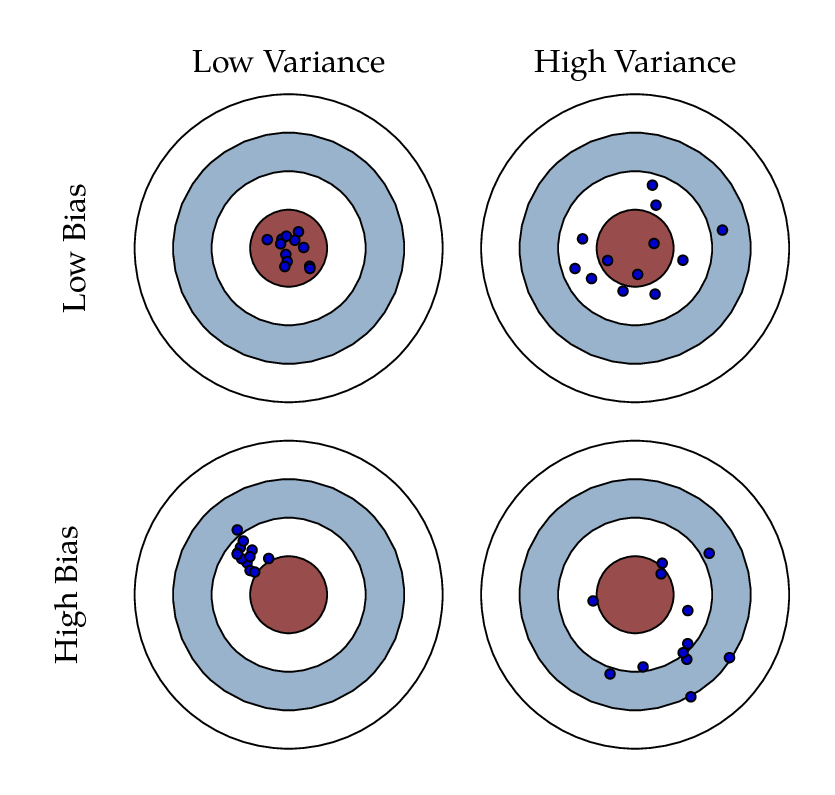
\[ \begin{align} M S E &\,=\, \frac{\sum_{i = 1}^{ n}\,(\, y_{i} - \hat{y}_{i} \,)^2}{n}\\ &\,=\,E \,[\, y_{i} - \hat{f}(\mathbf{X}) \,]^{2}\\ &\,=\, [\text{Bias}(\, \hat{f}(\mathbf{X}) \,)]^{2} \,+\, Var(\,\hat{f}(\mathbf{X})\,) \,+\, \text{Var}(\epsilon) \end{align} \]
knitr::include_graphics('lec_figs/bias-variance-tradeoff-2.png')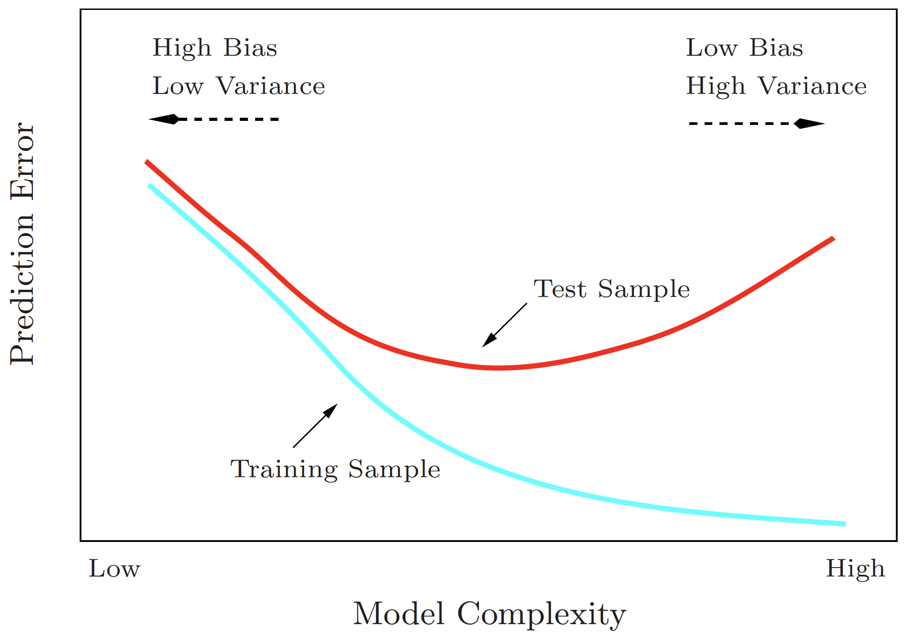
The horizontal dashed line represents \(\text{Var}(\epsilon)\), the irreducible error.
The vertical dotted line indicates the flexibility level corresponding to the smallest test MSE.
knitr::include_graphics('lec_figs/bias-variance-tradeoff-3.png')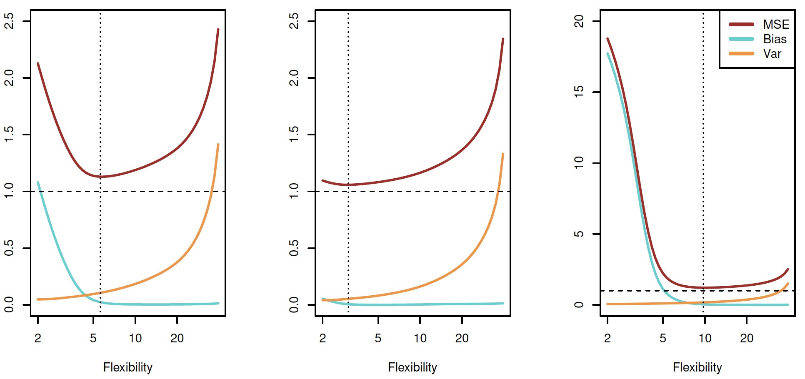
Regularization helps find some optimal amount of flexibility that minimizes MSE.
Regularized regression can resolve the following problems
age and years_of_workforce in linear regression of income are too highly correlated.\[\sum_i^n \big(Y_i - \beta_0 - \sum_j^p \beta_j x_{ij}\big)^2 + \lambda \sum_j^p \beta_j^2 = \text{SSE} + \lambda \sum_j^p \beta_j^2\] - As \(\lambda\) increases \(\Rightarrow\) flexibility of models decreases
increases bias, but decreases variance
For fixed value of \(\lambda\), ridge regression fits only a single model
For example: note how the magnitude of the coefficient for Income trends as \(\lambda \rightarrow \infty\)
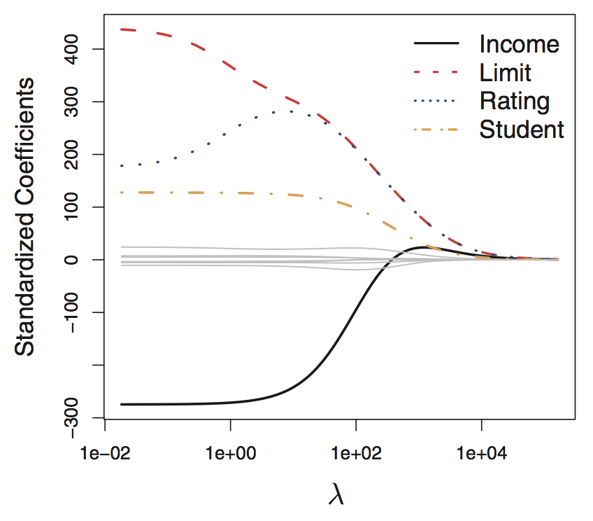
Income is always a variable in the learned model, regardless of the value of \(\lambda\).Ridge regression keeps all variables.
But Lasso regression gets lid of variables.
\[\sum_i^n \big(Y_i - \beta_0 - \sum_j^p \beta_j X_{ij}\big)^2 + \lambda \sum_j^p\vert \beta_j \vert = \text{SSE} + \lambda \sum_j^p \vert \beta_j \vert\]
As \(\lambda\) increases \(\Rightarrow\) flexibility of models decreases
Lasso can handle the \(p > n\) case, i.e. more variables than observations!
Lasso regression performs variable selection yielding sparse models, which only includes a small subset of the available variables that are relevant to predicting the outcome of interest.
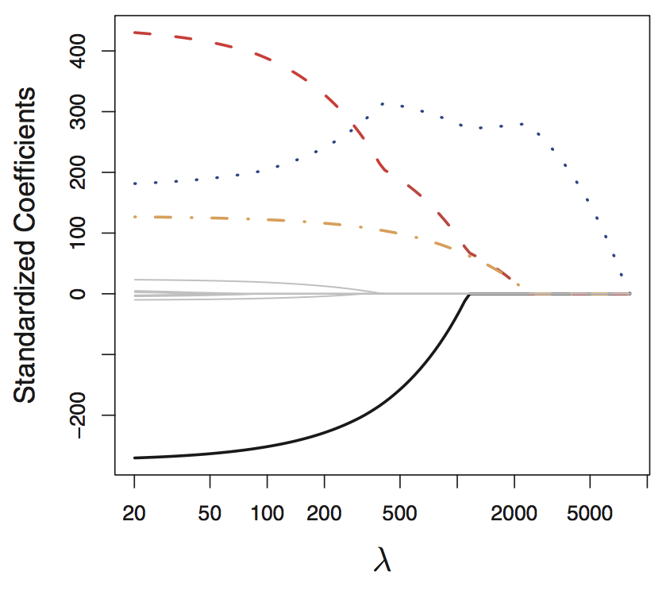
The coefficient shrinks towards and eventually equals zero at \(\lambda \approx 1000\)
If the optimum value of \(\lambda\) is larger, then Income would NOT be included in the learned model.
\[\sum_{i}^{n}\left(Y_{i}-\beta_{0}-\sum_{j}^{p} \beta_{j} X_{i j}\right)^{2}+\lambda\left[(1-\alpha)\|\beta\|_{2}^{2} / 2+\alpha\|\beta\|_{1} \right]\] - \(\vert \vert \beta \vert \vert_1\) is the \(\ell_1\) norm: \(\vert \vert \beta \vert \vert_1 = \sum_j^p \vert \beta_j \vert\)
\(\vert \vert \beta \vert \vert_2\) is the \(\ell_2\), Euclidean, norm: \(\vert \vert \beta \vert \vert_2 = \sqrt{\sum_j^p \beta_j^2}\)
Ridge penalty: \(\lambda \cdot (1 - \alpha) / 2\)
Lasso penalty: \(\lambda \cdot \alpha\)
\(\alpha\) controls the mixing between the two types, ranges from 0 to 1
\(\alpha = 1\) returns lasso
\(\alpha = 0\) return ridge
\[\sum_i^n \big(Y_i - \beta_0 - \sum_j^p \beta_j X_{ij}\big)^2 + \lambda \sum_j^p\vert \beta_j \vert = \text{SSE} + \lambda \sum_j^p \log(\, 1 + \vert \beta_j \vert\,)\]
With regularization, we put a cost on the magnitude of each \(\beta_{p}\).
If we force all the \(\hat{\beta}_{p}\) to be close to zero, then our \(\hat{y}\) values will be shrunk toward \(\bar{y}\) and when we jitter the data your predictions will not change as much as they would if we did not include a penalty term during estimation.
\(\lambda\) is the penalty weight that determines the price of complexity.
knitr::include_graphics('lec_figs/mba-3-4.png')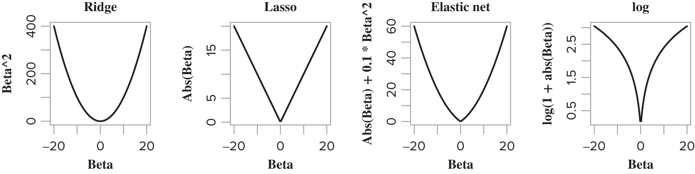
The ridge penalty (\(\beta^{2}\)) places little penalty on small values of \(\beta\).
The Lasso penalty (\(\vert \beta \vert\)) places a constant penalty on incremental deviations from zero.
The gamma Lasso penalty (\(\log(1 + \vert \beta \vert)\)) places extreme cost on the move from zero to small values of \(\beta\), but for large values the rate of penalty change is small.
The Lasso gives the least possible amount of bias on large signals while still retaining the stability of a convex penalty like ridge (convex means that the penalty does not flatten out for large values.).
The Lasso will yield automatic variable screening—model selection—some of the \(\hat{\beta}_{p}\) will be zero!
knitr::include_graphics('lec_figs/ridge-lasso-animation.gif')
Source: Quora
Here is another illustration of the Lasso and its path in 2D.
For either ridge, lasso, gamma lasso or elastic net: we should consider standardizing our data
Common convention: within each column, compute then subtract off the sample mean, and compute the divide off the sample standard deviation:
\[\tilde{x}_{ij} = \frac{x_{ij} - \bar{x}_j}{s_{x,j}}\]
glmnet and gamlr package do this by default and reports coefficients on the original scale
\(\lambda\) and \(\alpha\) are tuning parameters
When using glmnet, the cv.glmnet() function will perform the cross-validation for us
gamlr package does implements the gamma lasso algorithm.
gamlr, the cv.gamlr() function will perform the cross-validation for us.glmnetUtils enables us to use a data.frame to provide data to the model.
glmnet and gamlr use a sparse.matrix, instead of a data.frame, to provide data to the model.
A sparse matrix is a matrix with many zero entries.
knitr::include_graphics('lec_figs/sparse-matrix.png')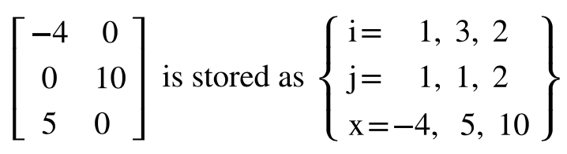
Split the data into k random and roughly evenly sized subsets, called folds. Then, for :
knitr::include_graphics('lec_figs/pds_fig69.png')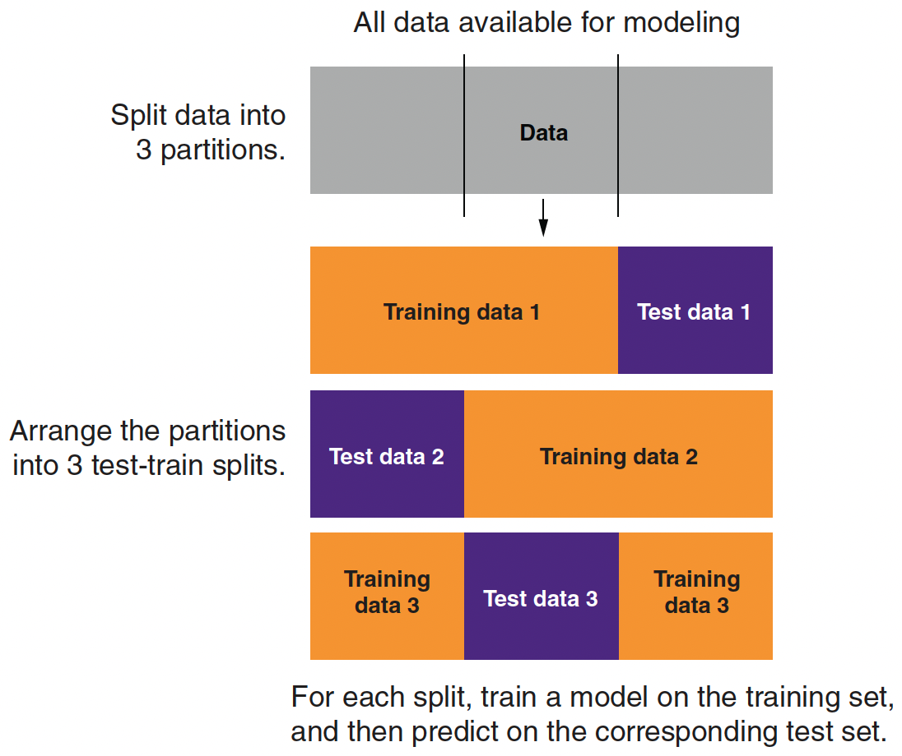
For each candidate model, \(m \in\{1, \cdots, M\}\), with \(\lambda_{m}\), we do k-fold cross-validation (CV).
So k-fold CV will yield a set of k OOS deviances for each of our candidate models.
How should we choose k?
k.cv.glmnet() and cv.gamlr()knitr::include_graphics('lec_figs/pds_fig718.png')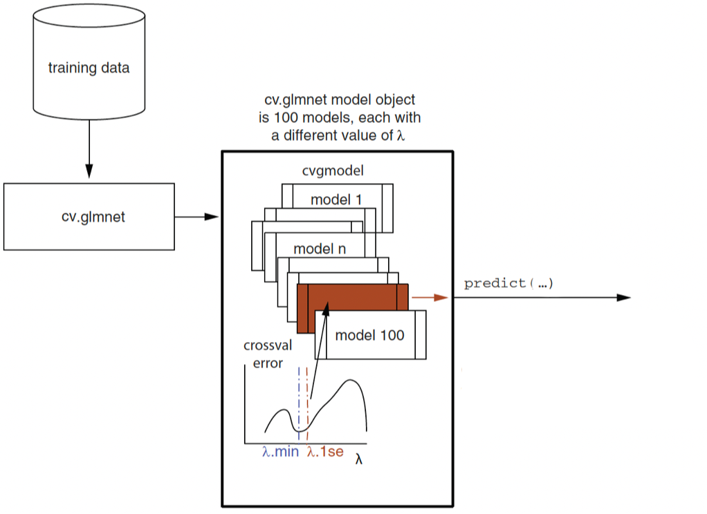
\(\lambda_{.min}\): the \(\lambda\) for the model with the minimum cross-validation (CV) error.
\(\lambda_{1se}\): corresponds to the model with cross-validation error, which is one standard error (se) of CV error above the minimum CV error.
cva.glmnet()knitr::include_graphics('lec_figs/pds_fig721.png')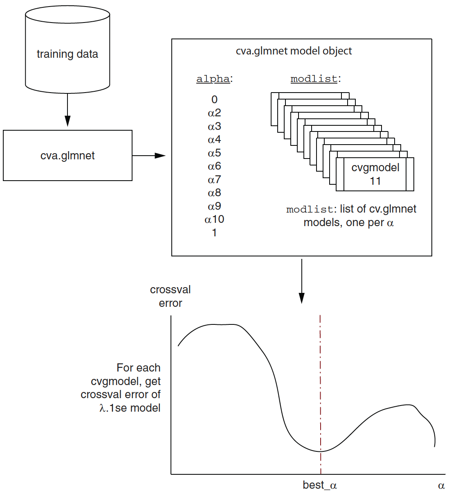